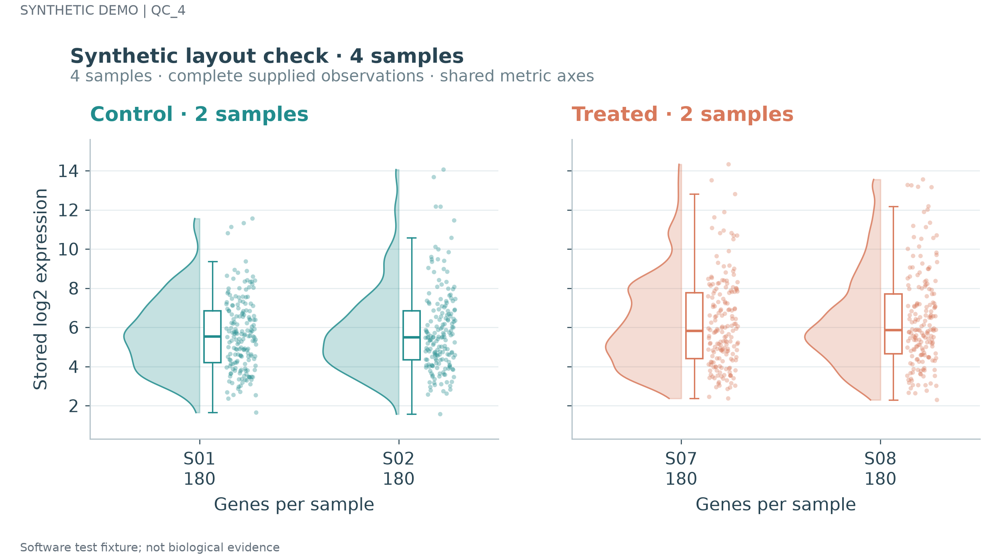
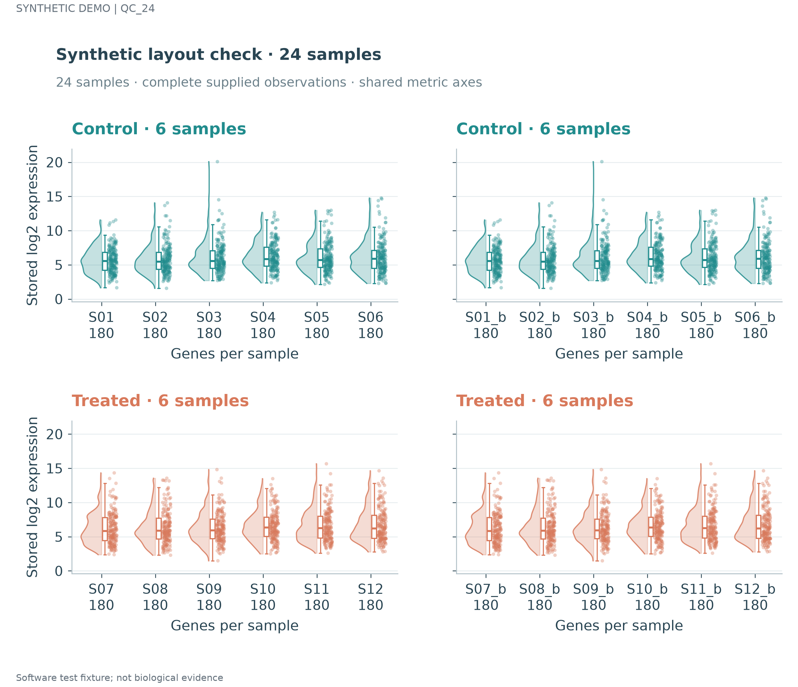
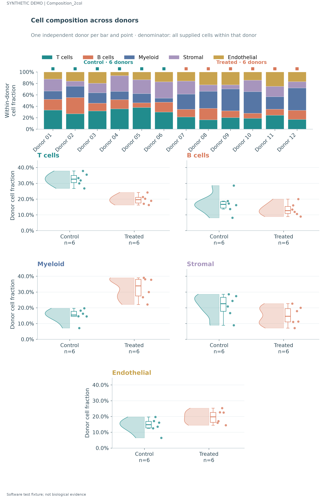
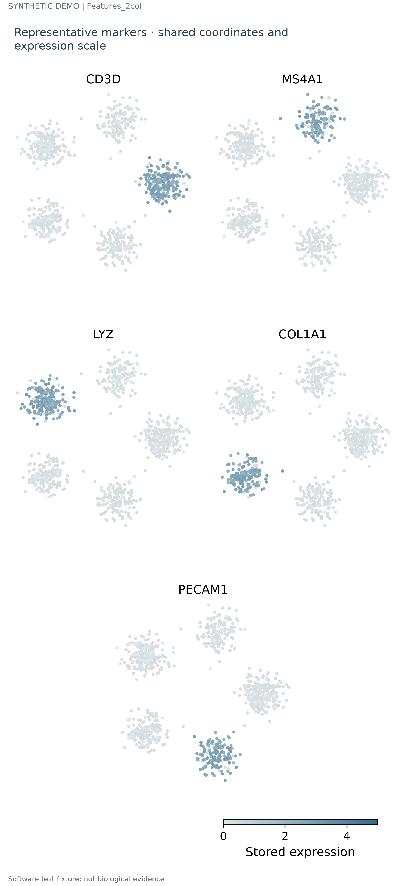
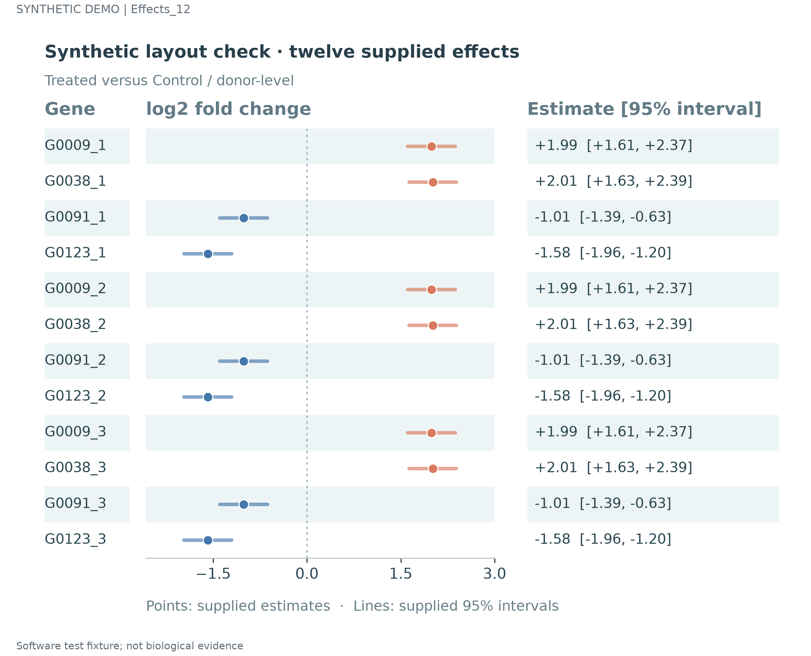
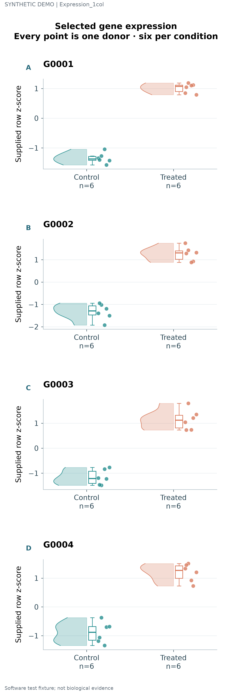

仅为虚构软件样例；复制值不代表新增独立生物学重复。六份最终PNG均逐张看图并绑定哈希，实际使用时新数据和布局需要重新检查。
四样本完整半云/观测/窄箱，稀疏数据仍有清楚的比较尺度。
SVG · PDF
24样本分为四个完整块；修复页标题与面板标题相碰，共用指标范围保留。
SVG · PDF
显式两列三行含完整供体堆积；调整长页面的物理标题和图例间距。
SVG · PDF
显式两列三行共同坐标特征图；压缩过大头尾空白并保留共同色阶。
SVG · PDF
12个虚构效应按条目增长行高；精确区间和名称仍对齐。
SVG · PDF
明确单列四行；每个基因全部供体点、半云与窄箱不拆分。
SVG · PDF